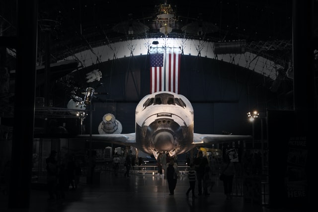
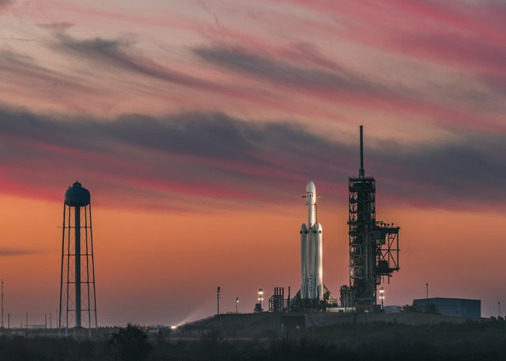
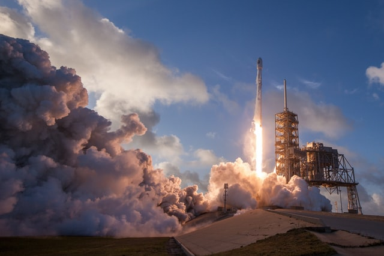
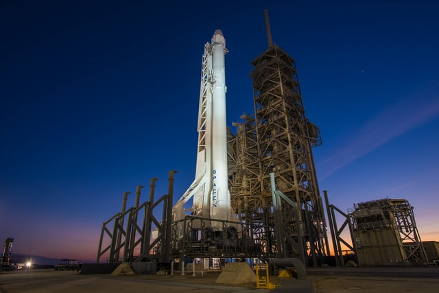

Our projects
Project DRAKON S10
The Drakon spacecraft is capable of carrying up to 7 passengers to and from Earth orbit, and beyond. It is the only spacecraft currently flying that is capable of returning significant amounts of cargo to Earth, and is the first private spacecraft to take humans to the space station.
Project CRT-200 SPACELINER
The CRT-200 Spaceliner is a class of reusable crew capsules expected to transport crew to the International Space Station and to private space stations such as the proposed Bigelow Aerospace Commercial Space Station.

Facilities
Guiana Space Center
Strategically-located facility that provides optimum operating conditions for Arianespace’s commercial launches with the heavy-lift Ariane 5, medium-size Soyuz and lightweight Vega.
Florida, Canaveral
Located on Merritt Island, Florida, is one of the National Aeronautics and Space Administration's (NASA) ten field centers. Since December 1968, KSC has been NASA's primary launch center of human spaceflight.
Vostocnyj, Amur
Located above the 51st parallel north in the Amur Oblast, in the Russian Far East. It is intended to reduce Russia's dependency on the Baikonur Cosmodrome in Kazakhstan.
News
SPACE X
SPACE 12 November 2020
Mark Earth's closest approach to the Sun for the year, called perihelion, at the start of the month, then spot a couple of elusive planets: Uranus on Jan. 20th and Mercury.
SPACE X
21 August 2019
Companies that run hotels, build cars and make TV are beginning to operate in space. This in-orbit economy could finance deeper space exploration.
NASA
12 June 2019
Humanity's first Mars mission will need a big rocket, lots of free time, reliable team mates and lots of NASA cash. Here's our 5-step plan to get people to the planet and back.
NASA
14 January 2019
An expanding research partnership between the National Aeronautics and Space Administration (NASA) and the U.S. Department of Agriculture will help develop new ways of growing food on Earth and in space..